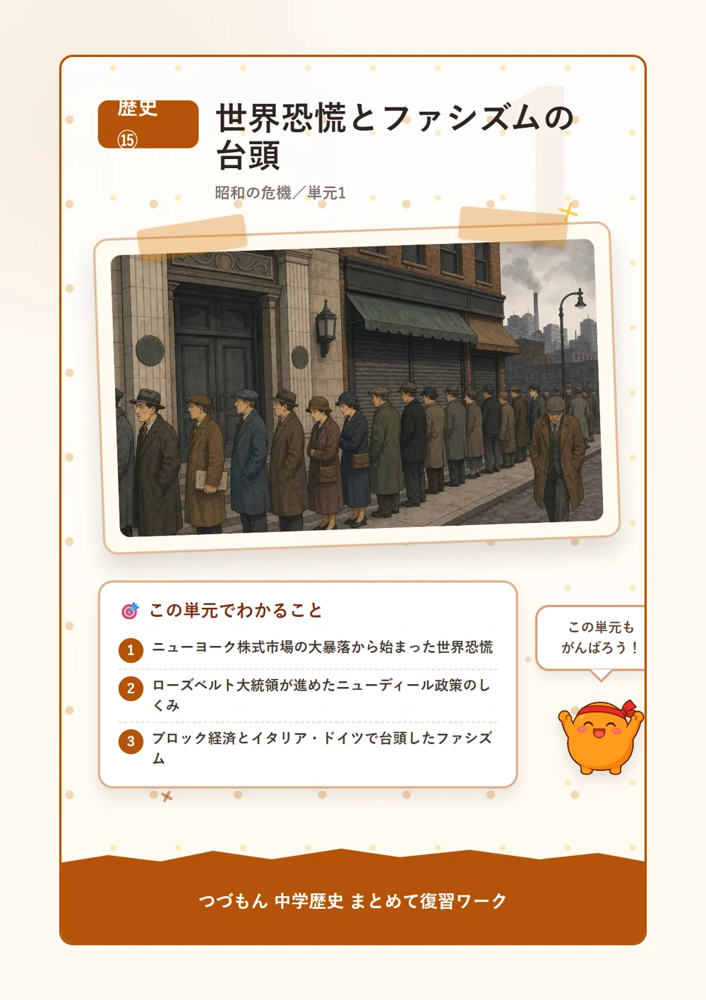
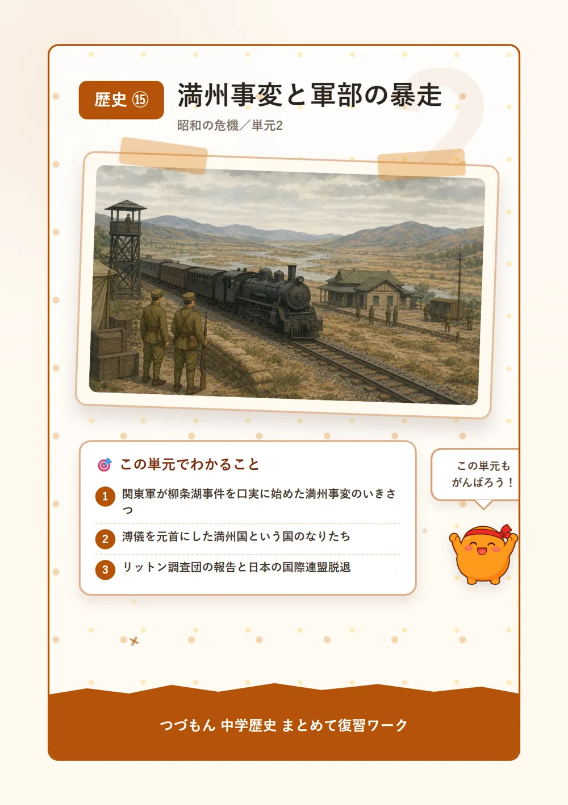
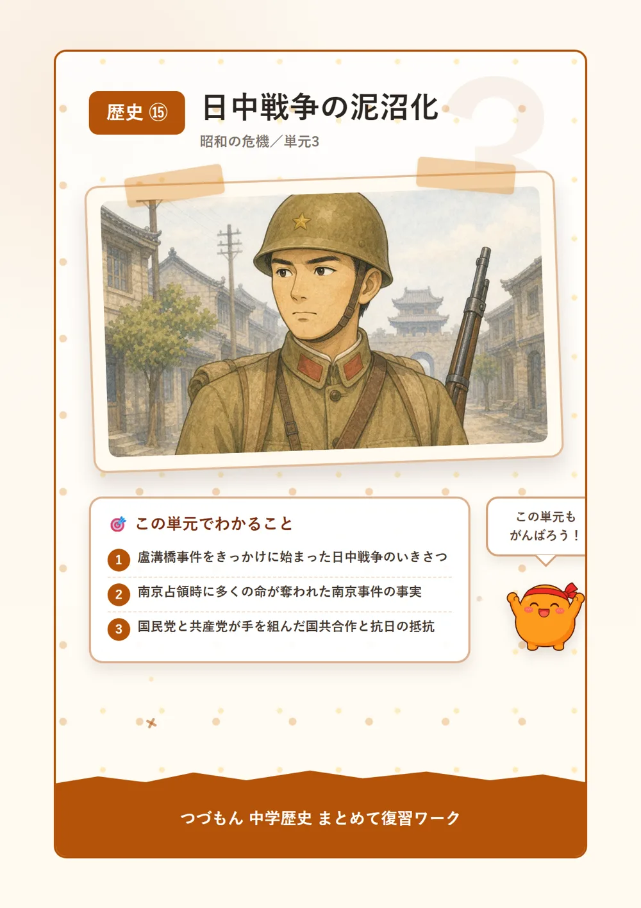

昭和の危機
 いっしょに
いっしょに読もう！
世界恐慌とファシズムの台頭

1世界恐慌のはじまり
1929年10月24日、「暗黒の木曜日」と呼ばれる日に、アメリカのニューヨーク株式市場で株価が大暴落したんだ。たった一日で多くの人の財産が紙くず同然になってしまうなんて、想像するとこわいよね。この混乱はまたたく間に世界中へ広がり、世界恐慌と呼ばれる大不況になった。工場は次々に閉鎖され、街には仕事を失った人があふれてしまったんだよ。
2アメリカのニューディール政策
恐慌で苦しむアメリカを立て直そうと、1933年に大統領になったフランクリン・ローズベルトは思い切った作戦に出たんだ。それがニューディール政策だよ。ダムづくりなどの公共事業をどんどん増やして、仕事のない人たちに仕事を与えたんだ。国が「見ているだけ」じゃなくて、経済に自分から深く関わっていく。当時としてはかなり画期的な発想だったんだよ。
3ブロック経済とファシズムの広がり
植民地をたくさん持っていたイギリスやフランスは、本国と植民地だけで一つの経済圏をつくり、よその国の商品には高い税をかけて締め出すブロック経済で乗り切ろうとしたんだ。でも植民地の少ないイタリアやドイツはそうもいかない。かわりに、個人より国家を優先する独裁体制ファシズムが勢いを増していく。イタリアではムッソリーニが、ドイツでは1933年に政権を握ったヒトラーがナチスを率いて独裁を固めた。知ってた?経済の行き詰まりが、こうして世界を戦争へ近づけていったんだよ。
4日本を襲った昭和恐慌
世界恐慌の波は日本にも押し寄せた。ちょうど金と紙幣を交換できるようにする「金解禁」を行った直後にこの恐慌が重なってしまい、昭和恐慌と呼ばれる深刻な不況におちいったんだ。とくに輸出用の生糸の値段が大きく暴落し、養蚕業を支えてきた農村は大きな打撃を受けた。人々の暮らしはとても苦しくなっていったんだよ。

満州事変と軍部の暴走

1柳条湖事件と満州事変
1931年9月、満州(中国東北部)を守っていた日本の軍隊関東軍は、自分たちで柳条湖事件を起こしたんだ。奉天(今の瀋陽)近くの南満州鉄道を自分たちで爆破しておきながら、それを中国軍のしわざだと偽って軍事行動を広げていった。こうして始まった一連の軍事行動を満州事変と呼ぶよ。信じられない話だけど、これが政府の許可なく軍が勝手に始めた戦争の始まりだったんだ。
2満州国の建国
満州を占領した関東軍は1932年、そこに満州国という国をつくったんだ。でも実際に政治を動かしていたのは日本で、独立国とは名ばかりの国だったんだよ。元首(トップ)にすえられたのは、清という国の最後の皇帝だった溥儀。かつて広大な中国を治めた皇帝が、日本に操られる立場に置かれてしまうなんて、なんとも複雑な運命だよね。
3国際連盟からの脱退
満州事変に対し、国際連盟はリットン調査団を現地に送って実情を調べさせた。その報告書は満州国を認めず、日本軍の撤退を求めるものだったんだ。これに納得できなかった日本は、1933年、ついに国際連盟を脱退してしまう。世界の国々と力を合わせる道を自ら閉ざしてしまったこの決断が、日本を国際的な孤立へと追いこんでいったんだよ。
4五・一五事件と二・二六事件
国内でも物騒な事件が続いたんだ。1932年、海軍の若い将校たちが五・一五事件を起こして犬養毅首相を暗殺してしまう。これ以降、政党の党首が首相になることがなくなり、政党政治は事実上終わってしまったんだよ。さらに1936年には陸軍の若い将校たちが二・二六事件を起こし、大臣らを暗殺する事件も起きた。こうした事件を経て、軍の発言力はどんどん強まっていったんだ。
日中戦争の泥沼化

1盧溝橋事件と日中戦争の始まり
1937年7月、北京の郊外にある盧溝橋という橋の近くで、日本軍と中国軍が衝突する盧溝橋事件が起きたんだ。小さなきっかけだったはずなのに、戦いは上海、そして南京へとどんどん広がってしまい、日中戦争という全面戦争に発展してしまった。ちょっとした衝突がこれほど大きな戦争につながってしまうなんて、こわいよね。
2南京事件
1937年12月、日本軍は中国の首都だった南京を占領したんだ。このとき、多くの市民や捕虜が殺害される南京事件が起きてしまった。この出来事は国際社会から厳しい批判を浴びることになったんだよ。戦争が人々の命をどれだけ奪ってしまうか、この事件はいまも私たちに重く問いかけているんだ。
3国共合作と抵抗を続ける中国
日本軍の侵略に対抗するため、それまで争っていた蒋介石の国民党と毛沢東の共産党が手を組んだんだ。これを国共合作というよ。ライバル同士が「今は日本と戦うことが先だ」と手を結んだところに、この戦争の重みが表れているよね。蒋介石は首都を南京から重慶へ移し、日本軍の激しい空襲を受けながらも降伏せず、抵抗を続けたんだ。
4戦時体制へと向かう日本
戦争が長引くと、日本国内も一気に戦争一色になっていったんだ。1938年、近衛文麿内閣は国家総動員法を制定し、議会の承認なしに国民や物資を戦争のために動かせるようにした。1940年にはすべての政党が解散して大政翼賛会にまとまり、同じ年に日本はドイツ・イタリアと日独伊三国同盟を結んだ。こうして日本は、後に引けないところまで戦争への道を突き進んでいってしまったんだよ。